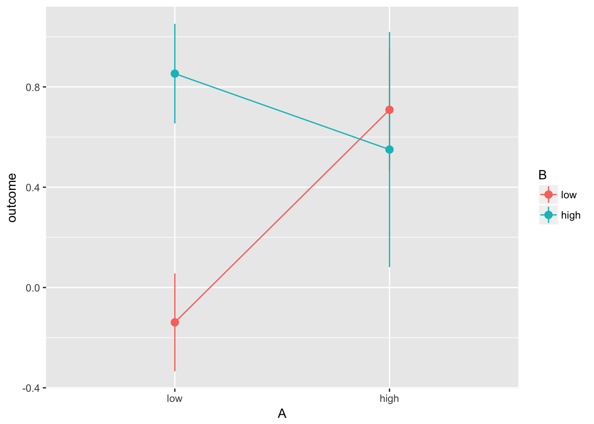
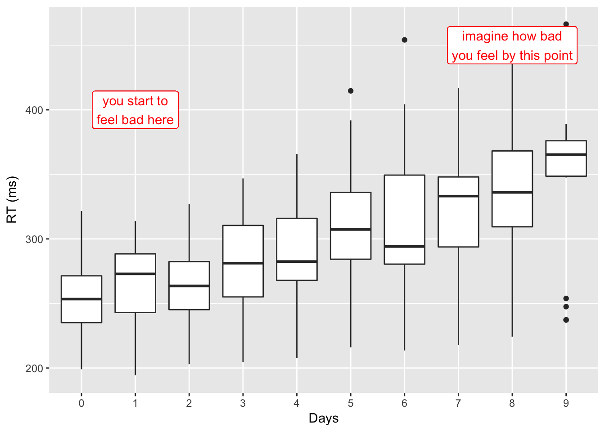
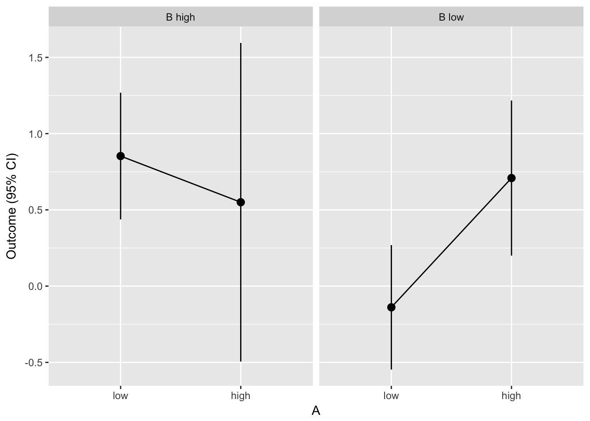
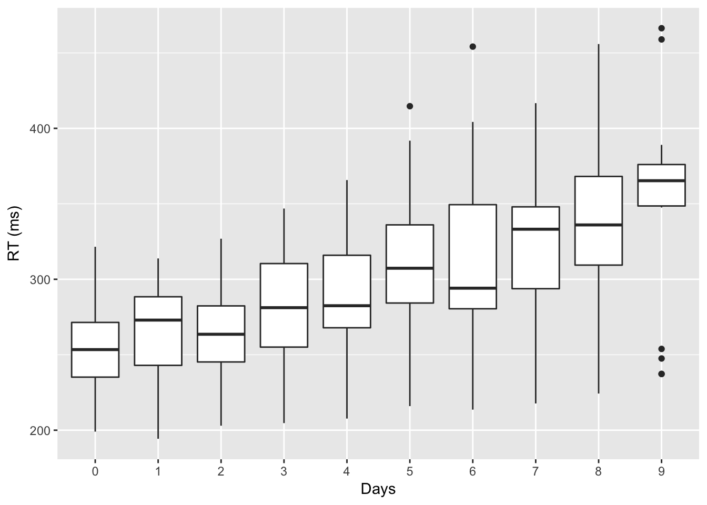

11 Anova in R
This section attempts to cover in a high level way how to specify anova models in R and some of the issues in interpreting the model output. If you just want the ‘answers’ — i.e. the syntax to specify common Anova models – you could skip to the next section: Anova cookbook
11.1 Differences between Anova in R v.s. SPSS or Stata
As noted previously:
- R can run (pretty much) any Anova model you want but.
- R’s default settings for Anova are different to those SPSS or Stata.
Most people probably do want to change these default settings, or use an R package that does it for you.
Important difference 1: Variable codings and contrasts
You may have heard it said before that Anova is just a special case of regression, but not fully explored the links between Anova and regression models.
One of the distinctive features of R is that, unlike SPSS, it tends to do things in a ‘regressiony’ way. In fact, you typically specify your Anova model in regression first, then call the anova() function on it to calculate the familiar F tests, etc.
This means:
- You need to work out kind of model you actually want (this is a good thing!)
- You sometimes have to work harder to make sure R uses categorical variables properly
By default R assumes all numeric variables are continuous linear predictors of the outcome. If you have a categorical variable coded as numbers you need to use the factor() function to make sure R knows it is categorical.
As a conseuqence, this model:
# model 1
summary(lm(mpg ~ cyl, data=mtcars))
##
## Call:
## lm(formula = mpg ~ cyl, data = mtcars)
##
## Residuals:
## Min 1Q Median 3Q Max
## -4.9814 -2.1185 0.2217 1.0717 7.5186
##
## Coefficients:
## Estimate Std. Error t value Pr(>|t|)
## (Intercept) 37.8846 2.0738 18.27 < 2e-16 ***
## cyl -2.8758 0.3224 -8.92 6.11e-10 ***
## ---
## Signif. codes: 0 '***' 0.001 '**' 0.01 '*' 0.05 '.' 0.1 ' ' 1
##
## Residual standard error: 3.206 on 30 degrees of freedom
## Multiple R-squared: 0.7262, Adjusted R-squared: 0.7171
## F-statistic: 79.56 on 1 and 30 DF, p-value: 6.113e-10Is completely different to this model:
# model 2
summary(lm(mpg ~ factor(cyl), data=mtcars))
##
## Call:
## lm(formula = mpg ~ factor(cyl), data = mtcars)
##
## Residuals:
## Min 1Q Median 3Q Max
## -5.2636 -1.8357 0.0286 1.3893 7.2364
##
## Coefficients:
## Estimate Std. Error t value Pr(>|t|)
## (Intercept) 26.6636 0.9718 27.437 < 2e-16 ***
## factor(cyl)6 -6.9208 1.5583 -4.441 0.000119 ***
## factor(cyl)8 -11.5636 1.2986 -8.905 8.57e-10 ***
## ---
## Signif. codes: 0 '***' 0.001 '**' 0.01 '*' 0.05 '.' 0.1 ' ' 1
##
## Residual standard error: 3.223 on 29 degrees of freedom
## Multiple R-squared: 0.7325, Adjusted R-squared: 0.714
## F-statistic: 39.7 on 2 and 29 DF, p-value: 4.979e-09The differences are:
In model 1,
cylis treated as a continuous predictor. One parameter is used, andcylis assumed to be a linear predictor ofmpg.In model 2,
cylis treated as a categorical predictor and is dummy coded (sometimes called treatment-coded). If there are 3 categories (i.e. 4, 6 or 8 cylinders) then there will be 2 parameters used which relate to 2 of the 3 categories. The intercept represents the estimate for the category which has been left out — i.e., it is the base or reference category.
Important difference 2: Which sums of squares?
Let’s imagine we have an experiment in which we measure reaction times (rt) under 2 between-subjects conditions: A and B. A has two levels, low or high.
fake.experiment <- expand.grid(
# expand grid will create 1 row for every combination
# of these variables
i = 1:20,
A = c("low", "high"),
B = c("low", "high")) %>%
# make the outcome variable as a function of A and B
mutate(outcome =
rnorm(n()) +
# main effect of A
1 * (A == "high") +
# main effect of B
# .5 * (B == "med") +
1 * (B == "high") +
# interaction between A:B
-2 * (A=="high") * (B == "high"))To add a twist though, let’s say our data not balanced: for example, that we don’t collect as many cases where both A and B are high. The following code deletes approximately 50% of these cases:
fake.experiment.unbalanced <- fake.experiment %>%
# create a marker, which is==1 50% of the time,
# when both A and B == high
mutate(droprow =
rbinom(n(), 1,
prob = (A=="high" & B == "high") * .5)) %>%
# get rid of marked rows
filter(droprow != 1)To check that the data really are unbalanced now, we can use the table() function which builds a contingency table:
fake.experiment.unbalanced %>%
select(A, B) %>%
table
## B
## A low high
## low 20 20
## high 20 11We can plot these data and see that the (large) interaction we specified is obvious:
fake.experiment.unbalanced %>%
ggplot(aes(A, outcome, color=B, group=B)) +
stat_summary(geom="pointrange", fun.data=mean_se) +
stat_summary(geom="line", fun.data=mean_se)
After plotting the data, we might want to run a 2x2 Anova to test whether this interaction is statistically significant. This call to lm() specifies the model, and summary() shows that the lm() model included:
- The intercept, which represents cases where
AandBare ‘low’. - The parameter
Ahigh, which represents the difference betweenA==lowv.s.A==highwhenB==low - The parameter
Bhigh, which represents the difference betweenB==lowv.s.B==high, whenA==low - The interaction term,
Ahigh:Bhigh, which represents the difference inoutcomewhen bothA==highANDB==high.
The model output is below:
fake.expt.model <- lm(outcome ~ A * B, data=fake.experiment.unbalanced)
summary(fake.expt.model)
##
## Call:
## lm(formula = outcome ~ A * B, data = fake.experiment.unbalanced)
##
## Residuals:
## Min 1Q Median 3Q Max
## -2.71684 -0.62706 -0.04711 0.58437 2.71553
##
## Coefficients:
## Estimate Std. Error t value Pr(>|t|)
## (Intercept) -0.1389 0.2382 -0.583 0.56168
## Ahigh 0.8476 0.3368 2.516 0.01426 *
## Bhigh 0.9920 0.3368 2.945 0.00444 **
## Ahigh:Bhigh -1.1504 0.5228 -2.200 0.03123 *
## ---
## Signif. codes: 0 '***' 0.001 '**' 0.01 '*' 0.05 '.' 0.1 ' ' 1
##
## Residual standard error: 1.065 on 67 degrees of freedom
## Multiple R-squared: 0.1318, Adjusted R-squared: 0.09294
## F-statistic: 3.391 on 3 and 67 DF, p-value: 0.02291The problem with this regression output (i.e. from the summary() function) is that we can only see what are often called the simple contrasts. The parameters represent pairwise contrasts between two cells of the design, and don’t test the overall effect of A or B.
Rather than using multiple, pairwise comparisons, we use Anova to provide a test of the combined effect of A, B, and the interaction of A and B.
Anova in R for SPSS users
At this point I recognise SPSS users’ main concern will be to reproduce the output SPSS would give by default. The code below uses the Anova() function from the car:: package. This function is a replacement for the built in anova() function (note lowercase ‘a’) but adds some additional features, including the ability to specify the type of sums of squares used for the F tests reported:
car::Anova(fake.expt.model, type=3)
## Anova Table (Type III tests)
##
## Response: outcome
## Sum Sq Df F value Pr(>F)
## (Intercept) 0.386 1 0.3402 0.561678
## A 7.184 1 6.3318 0.014261 *
## B 9.840 1 8.6720 0.004439 **
## A:B 5.494 1 4.8418 0.031230 *
## Residuals 76.022 67
## ---
## Signif. codes: 0 '***' 0.001 '**' 0.01 '*' 0.05 '.' 0.1 ' ' 1This table should match exactly the result obtained from a 2x2 Anova in SPSS. If, however, we had instead used the base anova() function we would see this output:
anova(fake.expt.model)
## Analysis of Variance Table
##
## Response: outcome
## Df Sum Sq Mean Sq F value Pr(>F)
## A 1 1.524 1.5240 1.3431 0.25060
## B 1 4.524 4.5242 3.9873 0.04991 *
## A:B 1 5.494 5.4937 4.8418 0.03123 *
## Residuals 67 76.022 1.1347
## ---
## Signif. codes: 0 '***' 0.001 '**' 0.01 '*' 0.05 '.' 0.1 ' ' 1Here the ‘main effects’ are not significant, and the interaction has a different p value from that SPSS would produce.
What’s wrong with the base R anova() function?
This is a good question. The short answer is that:
- There’s nothing wrong with it per-se, but
- R tests a different hypothesis than SPSS by default, and
- It’s probably not the hypothesis you want
- You might prefer to report F tests using type 2 or 3 sums of squares
- You can get these with the
car::Anova()function instead of the baseanova()function.
A longer answer is given in this online discussion on stats.stackechange.com and practical implications are shown in this worked example.
An even longer answer, including a much deeper exploration of the philosophical questions involved is given by Venables (1998). To hammer home the importance of not using the default anova() settings without careful thought, consider the following model output:
Example 1, mirroring SPSS default settings, and using type 3 sums of squares:
car::Anova(lm(outcome ~ A + B + A:B, data=fake.experiment.unbalanced), type=3)
## Anova Table (Type III tests)
##
## Response: outcome
## Sum Sq Df F value Pr(>F)
## (Intercept) 0.386 1 0.3402 0.561678
## A 7.184 1 6.3318 0.014261 *
## B 9.840 1 8.6720 0.004439 **
## A:B 5.494 1 4.8418 0.031230 *
## Residuals 76.022 67
## ---
## Signif. codes: 0 '***' 0.001 '**' 0.01 '*' 0.05 '.' 0.1 ' ' 1Example 2. using the standard anova() function. The model specifies A first:
anova(lm(outcome ~ A * B, data=fake.experiment.unbalanced))
## Analysis of Variance Table
##
## Response: outcome
## Df Sum Sq Mean Sq F value Pr(>F)
## A 1 1.524 1.5240 1.3431 0.25060
## B 1 4.524 4.5242 3.9873 0.04991 *
## A:B 1 5.494 5.4937 4.8418 0.03123 *
## Residuals 67 76.022 1.1347
## ---
## Signif. codes: 0 '***' 0.001 '**' 0.01 '*' 0.05 '.' 0.1 ' ' 1Example 3: as above, but with B specified first
anova(lm(outcome ~ B * A, data=fake.experiment.unbalanced))
## Analysis of Variance Table
##
## Response: outcome
## Df Sum Sq Mean Sq F value Pr(>F)
## B 1 3.707 3.7068 3.2669 0.07518 .
## A 1 2.341 2.3415 2.0636 0.15551
## B:A 1 5.494 5.4937 4.8418 0.03123 *
## Residuals 67 76.022 1.1347
## ---
## Signif. codes: 0 '***' 0.001 '**' 0.01 '*' 0.05 '.' 0.1 ' ' 1In the first example, car::Anova() provides the same output as SPSS. This is probably what you want, at least in the first instance. In examples 2 and 3, the main effects are ‘not significant’, even though in our simulated data we did create ‘main effects’ of A and B.
To make matters worse,in examples 2 and 3, the order in which we included the predictors A and B changes the F statistics for the main effects. Using a method where our results depend on the order in which we include the factors can lead to confusion, and is best avoided (although see the discussion below for why interpreting main effects in the presence of interactions might be a bad idea anyway).
What’s wrong with the SPSS defaults?
Interpreting main effects when there is a significant interaction between predictors doesn’t always make sense, so it’s debateable whether the p values for the main effects in a model containing interactions are useful.
For example, if we look at a bar plot of outcome by A, the confidence intervals are so wide that we wouldn’t want to draw any firm conclusions:
fake.experiment.unbalanced %>%
ggplot(aes(A, outcome, group=1)) +
stat_summary(geom="pointrange", fun.data=mean_cl_normal) +
stat_summary(geom="line", fun.data=mean_cl_normal) +
ylab("Outcome (95% CI)")
But if we draw the same plot for each level of B, it becomes clear that it wouldn’t make sense to argue there is a ‘main effect’ of A anyway, because the direction of the effect is different for each level of B:
fake.experiment.unbalanced %>%
ggplot(aes(A, outcome, group=1)) +
stat_summary(geom="pointrange", fun.data=mean_cl_normal) +
stat_summary(geom="line", fun.data=mean_cl_normal) +
ylab("Outcome (95% CI)") +
facet_grid(~paste("B", B))
Where there is an interaction, the meaning of the main effects changes. The moral of the story is that plotting your data and restating the effect in substantive terms are always crucial.
Important difference 3: R works on long-format data (so you must be careful with repeated measures models)
In R, data tend to be most useful in long format where:
- each row of the dataframe corresponds to a single measurement occasion
- each column corresponds to a variable which is measured
For example, in R we might have data like this:
df %>% head %>% pander| person | time | predictor | outcome |
|---|---|---|---|
| 1 | 1 | 2 | 6 |
| 1 | 2 | 2 | 11 |
| 1 | 3 | 2 | 10 |
| 2 | 1 | 2 | 9 |
| 2 | 2 | 2 | 5 |
| 2 | 3 | 2 | 4 |
Whereas in SPSS we might have the same data structured like this:
df.wide %>% head %>% pander| person | predictor | Time 1 | Time 2 | Time 3 |
|---|---|---|---|---|
| 1 | 2 | 6 | 11 | 10 |
| 2 | 2 | 9 | 5 | 4 |
| 3 | 2 | 6 | 6 | 8 |
| 4 | 4 | 10 | 11 | 7 |
| 5 | 4 | 11 | 3 | 7 |
| 6 | 1 | 7 | 12 | 16 |
What this means is that there is no automatic way for R to know which rows belong to which person (assuming individual people are the unit of error in your model).
If you are running a model where individuals are sampled more than once — for example in a repeated measures design — then you need to be explicit about which variables identifies subjects in your data.
For example, in the lme4::sleepstudy data, Reaction time is measuresd for each Subject on 10 Day’s:
lme4::sleepstudy %>% head(12) %>% pander| Reaction | Days | Subject |
|---|---|---|
| 249.6 | 0 | 308 |
| 258.7 | 1 | 308 |
| 250.8 | 2 | 308 |
| 321.4 | 3 | 308 |
| 356.9 | 4 | 308 |
| 414.7 | 5 | 308 |
| 382.2 | 6 | 308 |
| 290.1 | 7 | 308 |
| 430.6 | 8 | 308 |
| 466.4 | 9 | 308 |
| 222.7 | 0 | 309 |
| 205.3 | 1 | 309 |
lme4::sleepstudy %>%
ggplot(aes(factor(Days), Reaction)) +
geom_boxplot() +
xlab("Days") + ylab("RT (ms)")
Let’s say we want to test whether there were differences in distance at different ages. The following model is inappropriate because it ignores that distance is measured repeatedly from the same subject:
stupid.model <- lm(Reaction~factor(Days), data=lme4::sleepstudy)
anova(stupid.model)
## Analysis of Variance Table
##
## Response: Reaction
## Df Sum Sq Mean Sq F value Pr(>F)
## factor(Days) 9 166235 18470.6 7.8164 1.317e-09 ***
## Residuals 170 401719 2363.1
## ---
## Signif. codes: 0 '***' 0.001 '**' 0.01 '*' 0.05 '.' 0.1 ' ' 1Instead, I’d recommend you run a linear mixed model using the lmer() function.
more.sensible.model <- lmer(Reaction ~ factor(Days) + (1|Subject), data=lme4::sleepstudy)
lmerTest::anova(more.sensible.model)
## Analysis of Variance Table of type III with Satterthwaite
## approximation for degrees of freedom
## Sum Sq Mean Sq NumDF DenDF F.value Pr(>F)
## factor(Days) 166235 18471 9 153 18.703 < 2.2e-16 ***
## ---
## Signif. codes: 0 '***' 0.001 '**' 0.01 '*' 0.05 '.' 0.1 ' ' 1It is possible to run traditional repeat-measures Anova in R using the afex package (and others, athough this is the best) but it probably isn’t worth the effort (see the Anova cookbook section on repeat measures data for details).
11.2 General Anova recommendations
As should be obvious from the above:
Use
lm()to specify your model.Use the
car::Anova()function to get the Anova table, usingtype=3until you have thought more about it, and want something different.Where there is an interaction (even if it is not quite statistically significant) be careful about interpreting main effects in your model.
Keep your data in long form and be careful when specifying repeat measures Anova
Use mixed models rather than repeat measures Anova unless you have a special reason.
References
Venables, WN. 1998. “Exegeses on Linear Models.” In S-Plus User’s Conference, Washington Dc. http://www.stats.ox.ac.uk/pub/MASS3/Exegeses.pdf.